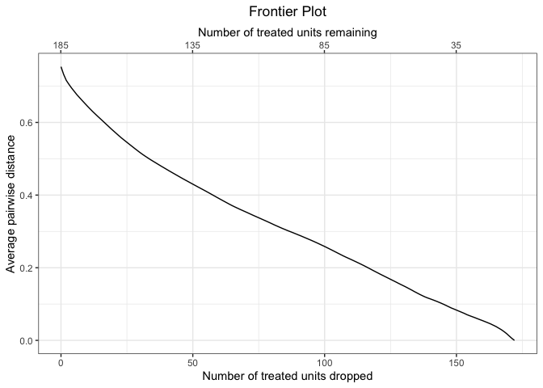
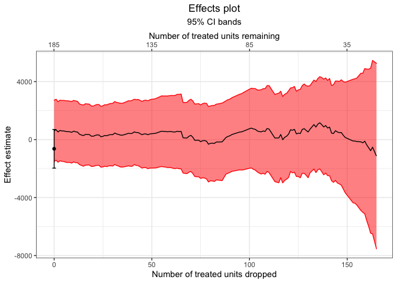

MatchingFrontier: Computation of the Balance-Sample Size Frontier in Matching Methods for Causal Inference

Overview
MatchingFrontier implements the methods described in King, Lucas, and Nielsen (2017) for exploring the balance-sample size frontier in observational studies, a function the relates the size of a matched subset to the covariate balance attained. Included are function to create the frontier, visualize it, and estimate treatment effects along it. In addition, functions are included to export a matched dataset at a single point on the frontier and assess model dependence for a single treatment effect estimate. MatchingFrontier interfaces with MatchIt to provide additional tools for assessing balance in matched datasets and estimating effects after matching.
Below is an example of using the MatchingFrontier to examine the balance-sample size frontier for the effect of a job training program on earnings. See vignette("MatchingFrontier") for more information on the setup and a more detailed exposition.
library("MatchingFrontier")
data("lalonde", package = "MatchIt")
mahal.frontier <- makeFrontier(treat ~ age + educ + race + married +
nodegree + re74 + re75,
data = lalonde,
QOI = "FSATT",
metric = "dist",
verbose = FALSE)
mahal.frontier#> A matchFrontier object
#> - quantity of interest: FSATT
#> - imbalance metric: average pairwise distance
#> - treatment: treat
#> - covariates: age, educ, race, married, nodegree, re74, re75
#> - number of points: 154Plotting the frontier provides a clear picture of the relationship between the number of units pruned in the matching and the remaining imbalance as measured by the average Mahalanobis imbalance.
plot(mahal.frontier)
We can then estimate effects along the frontier.
mahal.estimates <- estimateEffects(mahal.frontier,
base.form = re78 ~ treat,
verbose = FALSE)
mahal.estimates#> A frontierEstimates object
#> - quantity of interest: FSATT
#> - model sensitivity method: none
#> - number of estimates: 149
#> - treatment: treat
#> - covariates: age, educ, race, married, nodegree, re74, re75
#> - outcome model: re78 ~ treatFinally, we can plot the estimates and their confidence intervals.
plot(mahal.estimates)
Other tools include generateDataset() and frontier_to_matchit() for extracting a matched dataset at one point on the frontier and modelDependence() for computing model dependence bounds for a single estimate. See vignette("MatchingFrontier") for a more in-depth tutorial.
The work in this package is based off the following paper:
King, Gary, Christopher Lucas, and Richard A. Nielsen. 2017. “The Balance-Sample Size Frontier in Matching Methods for Causal Inference.” American Journal of Political Science 61(2): 473–89.